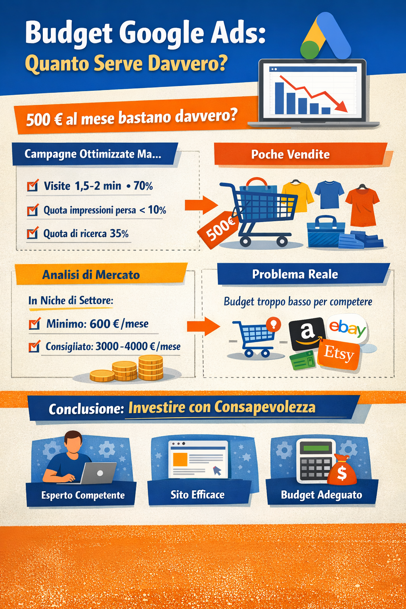

Budget Google Ads: perché i consigli di Google non sempre portano risultati

Quando si avvia una campagna su Google Ads, una delle prime indicazioni che vengono fornite riguarda il budget consigliato.
Molti imprenditori si chiedono se questi suggerimenti siano davvero affidabili e sufficienti per ottenere risultati concreti.
In questo articolo racconto un caso reale per spiegare perché un budget può essere tecnicamente “sufficiente” per Google, ma insufficiente per il mercato.
Il contesto: e-commerce di nicchia e budget limitato
Il progetto riguarda un e-commerce nel settore abbigliamento, ma in una nicchia molto specifica.
Il budget stabilito dal cliente era di 500 € al mese, mantenuto costante per circa un anno.
Non si è trattato di un test occasionale, ma di un lavoro continuativo, con analisi e ottimizzazioni costanti.
I dati delle campagne: segnali positivi, ma vendite ferme
Dal punto di vista operativo, le campagne erano impostate correttamente.
Performance del traffico a pagamento
- Le sessioni provenienti dalle campagne avevano:
- durata media tra 1,5 e 2 minuti;
- coinvolgimento medio superiore al 70%.
Incrociando i dati con Microsoft Clarity, emergeva che:
- la permanenza media complessiva sul sito era di circa 30 secondi;
- lo scroll medio era del 39%.
- Questo indicava che il traffico a pagamento performava meglio di altre sorgenti, non peggio.
Indicatori forniti da Google Ads
Anche i numeri mostrati dalla piattaforma sembravano rassicuranti:
- quota impressioni persa per budget sotto il 10%;
- quota impressioni sulla rete di ricerca intorno al 35%.
In sintesi: secondo Google, il budget era adeguato alla situazione.
Ottimizzazione tecnica: nessun problema evidente
Dal lato tecnico:
- parole chiave costantemente monitorate e pulite;
- esclusione dei siti non pertinenti;
- percorso di checkout in un solo passaggio, quindi semplice.
Non c’erano colli di bottiglia evidenti nel processo di acquisto.
Eppure, il risultato restava invariato: molti carrelli, poche vendite concluse.
L’analisi di mercato cambia la prospettiva
A quel punto è stato necessario uscire dalla sola lettura dei dati di piattaforma e analizzare il mercato nel suo insieme.
Come supporto è stato utilizzato anche ChatGPT, non come verità assoluta, ma come strumento di orientamento.
Stima dei budget nel settore specifico
L’analisi ha evidenziato che, in quella nicchia:
- 600 € al mese possono essere un minimo iniziale per una startup, limitato ai primi 2–3 mesi;
- per ottenere risultati economici stabili, il budget realistico sale a 3.000–4.000 € al mese.
Il progetto analizzato era quindi ampiamente sotto soglia, nonostante una strategia corretta.
Perché Google dice che il budget è sufficiente?
Qui nasce la domanda centrale.
Google valuta il budget in relazione:
- al numero di aste disponibili,
- alla concorrenza stimata,
- ai dati storici della piattaforma.
Questo significa che un budget può essere sufficiente per partecipare alle aste, ma non sufficiente per vincerle abbastanza spesso da generare vendite costanti.
In mercati molto competitivi, questo scarto diventa decisivo.
La concorrenza reale negli e-commerce oggi
Il mercato non è composto solo da piccoli brand.
Un e-commerce oggi compete anche con grandi player come:
- Amazon
- eBay
- Etsy
Questi attori erodono quote di mercato e alzano continuamente il costo dell’attenzione dell’utente.
La vera lezione: investire con consapevolezza
Il punto non è dire che Google Ads non funziona, né che i consigli di Google siano inutili.
La lezione è un’altra.
Oggi:
- 300–500 € al mese non sono più sufficienti in molti settori, soprattutto in ambito e-commerce;
- anche una strategia ben costruita può fallire se il budget non è allineato al mercato.
Cosa dovrebbe fare un imprenditore prima di investire
Prima di iniziare a fare pubblicità online è fondamentale:
- scegliere un professionista competente;
- avere un sito chiaro, veloce e facile da usare;
- valutare se il budget disponibile è coerente con gli obiettivi reali.
Essere presenti su Google è importante.
Ma è meglio esserci nel modo giusto, con numeri sostenibili, piuttosto che esserci parzialmente e attribuire il mancato risultato allo strumento sbagliato.